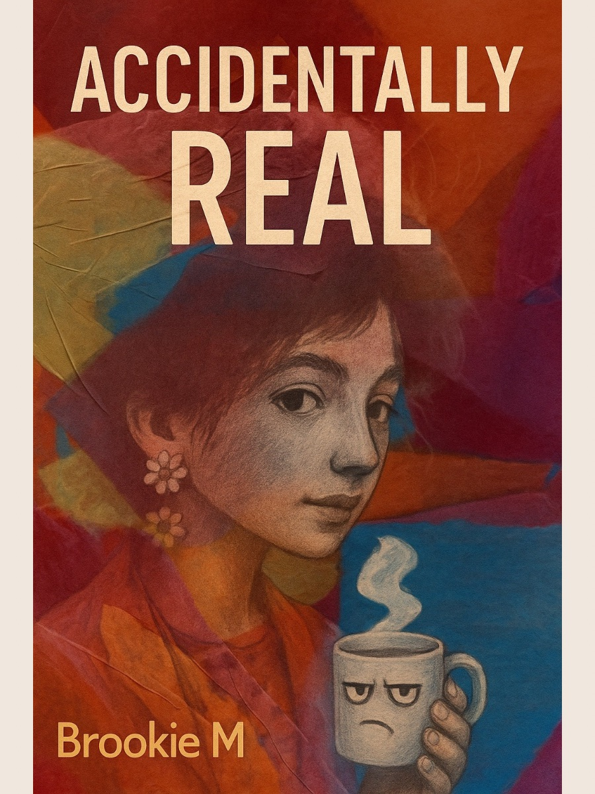

Accidentally Real
Novel • Kitty, Otter, and the sacred mending. (In progress)
A living gallery of projects blooming in Soft Time.
Novel • Kitty, Otter, and the sacred mending. (In progress)
Forward-memories journal — “Taste and see.”

Wonder, thresholds, and softly rebellious doodles.

Mint’s threshold notes and sprinkles of clarity.

A log of progress, feathers, and sideways timelines.

Poems & parables passed warm, with crumbs.

Daily pocket pages for soft noticing and sacred pause.